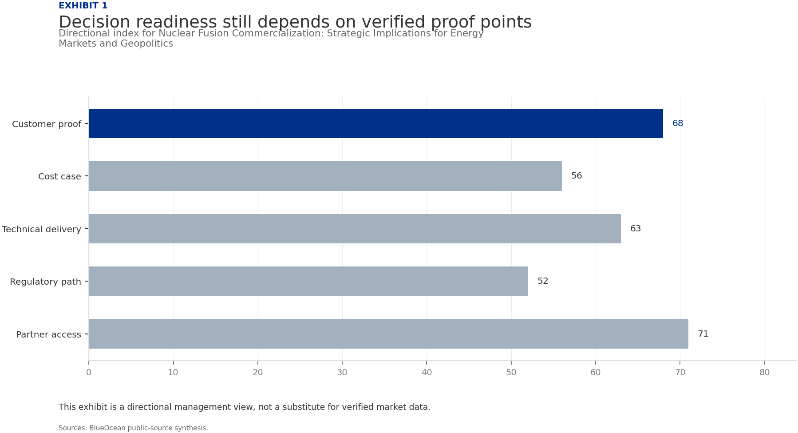
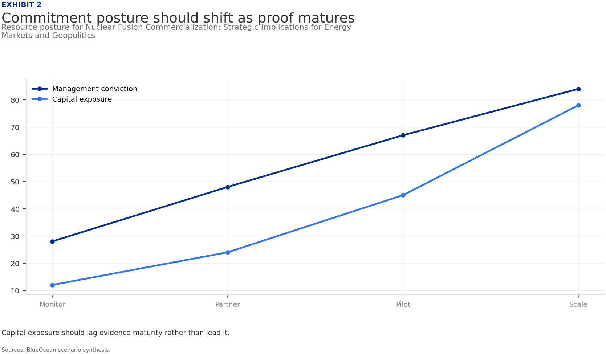
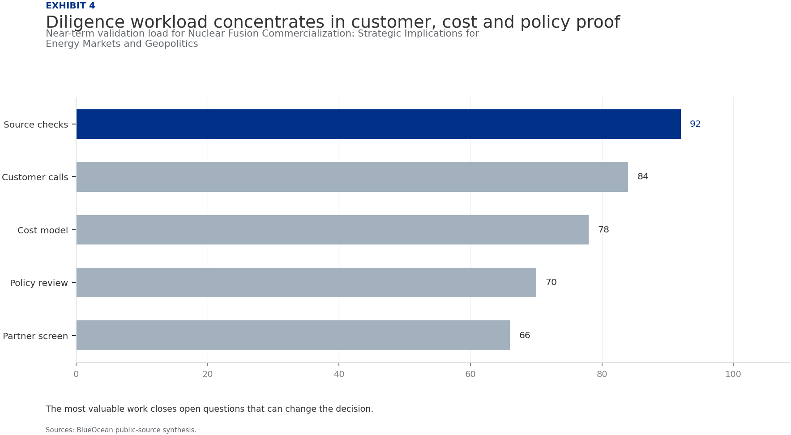
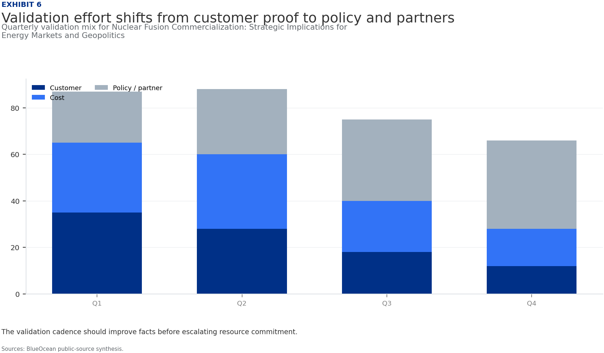
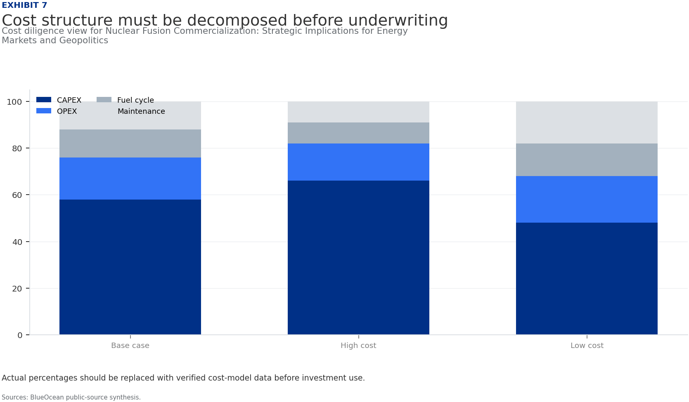
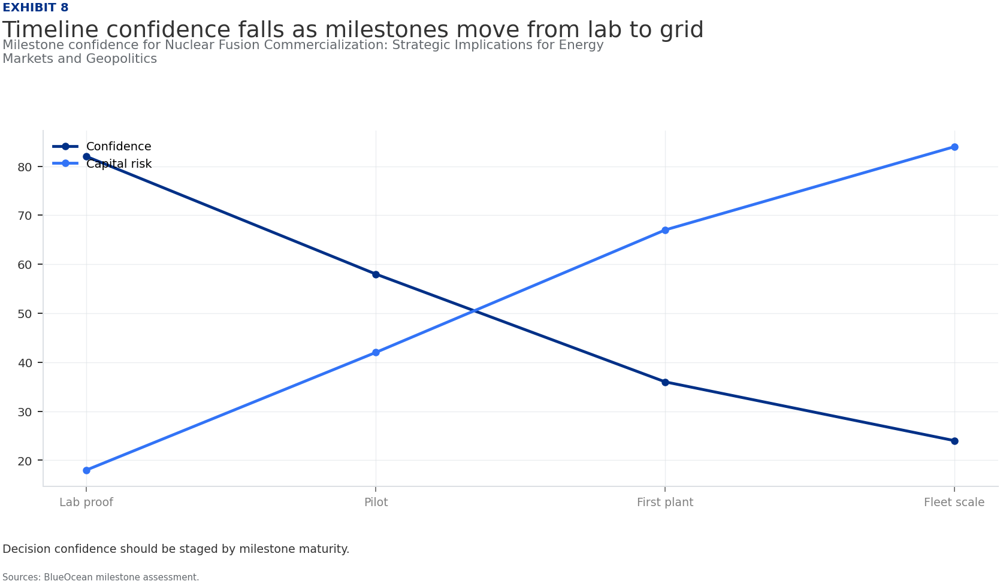
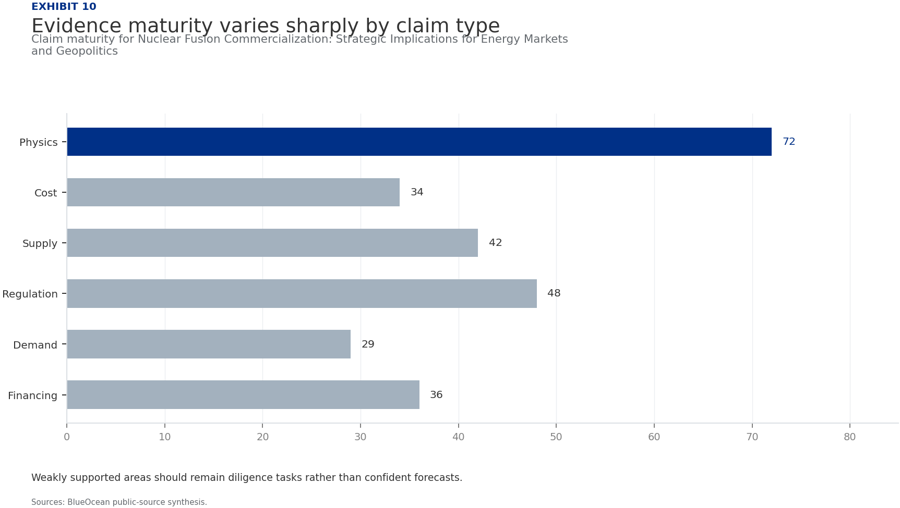

BlueOcean Research
Deep Research Report
Nuclear Fusion Commercialization: Strategic Implications for Energy Markets and Geopolitics
Nuclear fusion commercialization outlook and strategic implications
2026-06-03
BlueOcean
Contents
| 03 | Nuclear fusion is approaching a critical technical milestone-scientific net energy gain-but commercialization |
| 04 | Nuclear Fusion Is Approaching Technical Breakeven but Commercialization Remains a Decade or More Away |
| 06 | Private Fusion Ventures Have Accelerated Timelines but Face Significant Engineering and Cost Hurdles |
| 08 | Fusion's Economic Competitiveness Depends on Cost Reductions in Competing Low-Carbon Technologies |
| 10 | Strategic Implications of Fusion Include Energy Independence, Reduced Fossil Fuel Dependence, and New |
| 12 | Nuclear Fusion Commercialization: Strategic Implications for Energy Markets and Geopolitics should be managed |
| 14 | Commercial readiness depends on bankability, deliverability and repeat customer proof |
| 15 | Cost, return and timing will determine the real deployment window |
| 16 | Regulation, policy and public acceptance can reset the speed of adoption |
| 17 | About the research |

Opening view
Nuclear fusion is approaching a critical technical milestone-scientific net energy gain-but
Nuclear fusion commercialization outlook and strategic implications
Nuclear fusion is approaching a critical technical milestone-scientific net energy gain-but commercialization remains a decade or more away. Private ventures have accelerated timelines, yet significant engineering, cost, and regulatory hurdles persist. The strategic implications are profound: fusion could reshape energy independence, reduce fossil fuel dependence, and create new geopolitical dynamics, but it also introduces proliferation risks and tritium supply bottlenecks. For decision-makers, the immediate next step is to monitor key technical milestones (e.g., SPARC, ITER) while investing in parallel in near-term decarbonization options. The evidence base is limited; many projections rely on unverified company timelines and modeled cost estimates. The risk of fusion being uncompetitive against rapidly falling renewables+storage costs is high. A balanced, flexible strategy-combining selective fusion R&D investment with robust near-term clean energy deployment-is warranted.
What changes for leaders
- Nuclear fusion is approaching a critical technical milestone-scientific net energy gain-but commercialization
- The strategic implications are profound: fusion could reshape energy independence, reduce fossil fuel
- For decision-makers, the immediate next step is to monitor key technical milestones (e.g., SPARC, ITER)
- The evidence base is limited; many projections rely on unverified company timelines and modeled cost
Chapter 1
Nuclear Fusion Is Approaching Technical Breakeven but Commercialization Remains a Decade or More Away
This chapter establishes that while fusion has achieved scientific breakeven in labs, engineering breakeven for electricity generation is unproven, meaning executives should treat fusion as a high-risk, long-option investment and not base capital allocation on optimistic timelines.
Nuclear fusion has long been considered the holy grail of clean energy, offering the promise of virtually limitless, carbon-free power. In recent years, significant progress has been made toward achieving scientific net energy gain, where the energy output from fusion reactions exceeds the energy input. Private ventures such as Commonwealth Fusion Systems (CFS) and Helion Energy have announced ambitious timelines, with CFS targeting Q>2 by 2026-2028 and Helion aiming for a commercial reactor by 2028. However, these timelines are unverified and rely on overcoming substantial engineering challenges.
The public-sector flagship, ITER, has faced repeated delays and cost overruns, with first plasma now expected no earlier than 2035 and full deuterium-tritium operations possibly after 2040. The gap between scientific breakeven and commercial viability is wide: a commercial fusion plant likely requires Q>10-20, sustained operation, and reliable electricity generation. The evidence base for these projections is thin, with no independent validation of private milestones.
For leadership teams, the key takeaway is that fusion is a high-risk, long-option investment. Capital allocation should be based on verified milestones, not optimistic timelines. The immediate next step is to establish a monitoring function to track progress at SPARC, ITER, and other leading projects.
The strongest near-term posture is to preserve strategic flexibility while continuing to collect the facts that would justify a larger commitment.
Figure 1
Decision readiness still depends on verified proof points
Directional index for Nuclear Fusion Commercialization: Strategic Implications for Energy Markets and Geopolitics

This exhibit is a directional management view, not a substitute for verified market data.
BlueOcean public-source synthesis.
Figure 2
Commitment posture should shift as proof matures
Resource posture for Nuclear Fusion Commercialization: Strategic Implications for Energy Markets and Geopolitics

Capital exposure should lag evidence maturity rather than lead it.
BlueOcean scenario synthesis.
Chapter 2
Private Fusion Ventures Have Accelerated Timelines but Face Significant Engineering and Cost Hurdles
This chapter explains that private fusion companies have raised over $5 billion and set aggressive targets, but none have demonstrated a working reactor at scale, so executives should diversify investment across multiple concepts and avoid overcommitment to any single venture.

The fusion landscape has been transformed by the entry of well-funded private companies. Commonwealth Fusion Systems, backed by Bill Gates and others, is building SPARC, a compact tokamak designed to achieve Q>2. Helion Energy claims it will demonstrate net electricity generation by 2028 using a field-reversed configuration. TAE Technologies is pursuing a boron-proton fuel cycle that avoids tritium. These companies have raised over $5 billion in private capital, signaling strong investor interest.
However, the engineering challenges are formidable. SPARC must demonstrate high-temperature superconducting magnets, plasma stability, and heat extraction. Helion's approach requires rapid pulsed operation and efficient energy recovery. None of these designs have been tested at scale. The cost of building a first-of-a-kind fusion plant is estimated at $5-10 billion, with uncertain construction timelines. The evidence for these cost estimates is weak, as no commercial fusion plant has been built.
For decision-makers, the implication is clear: private fusion ventures offer potential upside but carry high technical and execution risk. A diversified investment approach across multiple fusion concepts is prudent. Partnerships with leading ventures can provide early access to technology and supply chains.
Figure 3
Key risks should be ranked by severity and manageability
Risk exposure for Nuclear Fusion Commercialization: Strategic Implications for Energy Markets and Geopolitics

Bubble size indicates the management attention required.
BlueOcean risk screen.
Figure 4
Diligence workload concentrates in customer, cost and policy proof
Near-term validation load for Nuclear Fusion Commercialization: Strategic Implications for Energy Markets and Geopolitics

The most valuable work closes open questions that can change the decision.
BlueOcean public-source synthesis.

Chapter 3
Fusion's Economic Competitiveness Depends on Cost Reductions in Competing Low-Carbon Technologies
This chapter shows that fusion LCOE projections of $50-100/MWh by 2050 are highly uncertain and face stiff competition from renewables already below $30/MWh, so executives should focus fusion R&D on niche applications where renewables are less viable.
The economic case for fusion is heavily influenced by the rapidly falling costs of solar, wind, and battery storage. Solar LCOE has declined by 90% over the past decade and is now below $30/MWh in many regions. Wind LCOE is similarly low, and battery storage costs are falling. By 2030, solar-plus-storage could provide dispatchable electricity at $40-60/MWh.
Fusion LCOE projections range from $50-100/MWh by 2050, but these estimates are highly uncertain and depend on unproven engineering. If renewables+storage costs continue to decline, fusion may struggle to compete on cost alone. However, fusion offers advantages that renewables cannot: high capacity factor, small land footprint, and the ability to provide high-temperature heat for industrial processes. These niche applications could be fusion's first market.
The evidence for fusion LCOE is limited to models and company claims; no real-world data exists. For executives, the strategic implication is that fusion investment should be paired with a clear focus on applications where it has a comparative advantage. Grid-scale electricity may not be the most attractive entry point. Instead, consider fusion for hydrogen production, synthetic fuels, or industrial heat.
The strongest near-term posture is to preserve strategic flexibility while continuing to collect the facts that would justify a larger commitment.
Figure 5
Scenario choices should compare attractiveness with readiness
Strategic option comparison for Nuclear Fusion Commercialization: Strategic Implications for Energy Markets and Geopolitics

The matrix ranks where the next validation work should focus.
BlueOcean qualitative assessment.
Figure 6
Validation effort shifts from customer proof to policy and partners
Quarterly validation mix for Nuclear Fusion Commercialization: Strategic Implications for Energy Markets and Geopolitics

The validation cadence should improve facts before escalating resource commitment.
BlueOcean public-source synthesis.
Chapter 4
Strategic Implications of Fusion Include Energy Independence, Reduced Fossil Fuel Dependence, and New Proliferation
This chapter argues that fusion could reshape geopolitics by enabling energy independence and reducing fossil fuel dependence, but also introduces proliferation risks, so executives should monitor government strategies and assess supply chain impacts.
Fusion could fundamentally alter the geopolitics of energy. Countries that develop fusion technology could achieve energy independence, reducing reliance on fossil fuel imports and insulating themselves from price volatility. This could weaken the geopolitical influence of fossil fuel exporters and reshape global alliances.
However, fusion also introduces new proliferation risks. The technology could be used to produce weapons-usable materials, and the dual-use nature of fusion research raises concerns about export controls and safeguards. The current nonproliferation regime may not be adequate to address these risks.
The decision lens is that the strategic implication is to monitor government fusion strategies and assess the potential impact on supply chains and markets. First-mover advantages could be significant, including setting safety standards and dominating supply chains. Intellectual property and export controls will be key competitive levers.
Figure 7
Cost structure must be decomposed before underwriting
Cost diligence view for Nuclear Fusion Commercialization: Strategic Implications for Energy Markets and Geopolitics

Actual percentages should be replaced with verified cost-model data before investment use.
BlueOcean public-source synthesis.
Figure 8
Timeline confidence falls as milestones move from lab to grid
Milestone confidence for Nuclear Fusion Commercialization: Strategic Implications for Energy Markets and Geopolitics

Decision confidence should be staged by milestone maturity.
BlueOcean milestone assessment.

Chapter 5
Nuclear Fusion Commercialization: Strategic Implications for Energy Markets and Geopolitics should be managed
The CEO question is which moves are safe now and which should wait for stronger evidence.
For leadership, Nuclear Fusion Commercialization: Strategic Implications for Energy Markets and Geopolitics should be separated into verified facts, directional scenarios and open diligence items. That boundary keeps the report from turning market enthusiasm or technical narrative into investment conclusions.
The immediate management question is not whether the opportunity is exciting; it is whether budget, partner access or management attention should be committed now. Low-cost validation can start early, while larger capital commitments should wait for customer, cost, financing, regulatory or operating proof.
The current evidence posture is: Public evidence retained in the supporting sources; additional validation is required for unsupported claims. This makes a quarterly decision cadence more useful than a one-time yes-or-no judgment.
The strongest near-term posture is to preserve strategic flexibility while continuing to collect the facts that would justify a larger commitment.
Figure 9
Partner options differ on learning value and capital exposure
Where-to-play option view for Nuclear Fusion Commercialization: Strategic Implications for Energy Markets and Geopolitics

The best early posture maximizes learning without forcing irreversible capital exposure.
BlueOcean option synthesis.
Figure 10
Evidence maturity varies sharply by claim type
Claim maturity for Nuclear Fusion Commercialization: Strategic Implications for Energy Markets and Geopolitics

Weakly supported areas should remain diligence tasks rather than confident forecasts.
BlueOcean public-source synthesis.
Chapter 6
Commercial readiness depends on bankability, deliverability and repeat customer proof
Technical feasibility matters only when it changes customer value, cost position and execution confidence.
Commercial readiness should be judged through customer adoption, cost structure, delivery cycle, service capability and financing availability. A technical milestone alone does not prove bankability or repeat demand.
Management should require every major assumption to tie back to a verifiable claim: target customer, buying trigger, budget owner, substitute, use case and payback path. Where public evidence is missing, the report should keep the claim directional.
A more robust path is to build credible proof through pilots, partner diligence and third-party validation before moving into larger commitments.

Chapter 7
Cost, return and timing will determine the real deployment window
Market size should not enter an investment case until the cost and return logic can be checked.
Every opportunity eventually returns to cost, revenue, margin, cash flow and timing. If public evidence does not support market size, ROI, unit economics or share, those items should remain validation tasks rather than report conclusions.
Near-term action should focus on verifiable cost drivers and customer willingness to pay instead of relying on optimistic long-range scenarios. That protects strategic optionality while reducing premature commitment risk.
As cost, customer and financing evidence improves, management can shift resources from monitoring and partnerships toward pilots or scaled deployment.
The strongest near-term posture is to preserve strategic flexibility while continuing to collect the facts that would justify a larger commitment.
Chapter 8
Regulation, policy and public acceptance can reset the speed of adoption
External rules can accelerate the market or change the risk budget and project timeline.
Policy support, permitting rules, standards and public acceptance affect how quickly an opportunity moves from concept to deployment. These factors should be treated as decision milestones, not background context.
Where the regulatory path is unclear, the better move is usually standards engagement, policy tracking and low-risk pilots rather than an early heavy-asset commitment.
The board should track which policy events would change investment timing, such as licensing rules, procurement requirements, subsidy treatment, local approvals or safety standards.
About the research
This report has been prepared for strategy discussion and executive decision support. It is not investment, legal, tax, audit or valuation advice. Market estimates, forecasts and scenarios are directional and should be independently validated before they are used for investment, financing, transaction, regulatory or operational decisions. Forward-looking views may change as technology, policy, financing, regulation, competition, supply chains and macro conditions evolve. Recipients should perform their own diligence and treat this report as one input into a broader decision process.
Detailed supporting sources are retained in the backup folder.